Ce manuel explique, geste par geste, comment les agents de la Clinique NASSIERA TOO utilisent SIGH-CNT au quotidien.
1.1 À qui s’adresse ce manuel
Ce manuel s’adresse à tous les agents de la clinique qui utilisent SIGH-CNT : accueil, soignants, laboratoire, pharmacie et stock, caisse, comptabilité, ressources humaines, administration et Direction.
Il couvre trois outils :
le poste de travail : l’application de bureau installée sur les ordinateurs de la clinique ;
l’application mobile : le téléphone du soignant en tournée et la réception de secours ;
le relais web : ce que vous en voyez, c’est-à-dire très peu (il transporte les données chiffrées entre les postes et les téléphones).
L’installation, les comptes, les droits, les sauvegardes et le réglage du relais sont traités dans le Manuel administrateur.
1.2 D’où viennent les captures d’écran
Les captures de ce manuel sont prises sur la maquette de référence de SIGH-CNT. La maquette est l’exécutable qui fait foi : l’interface du poste de travail la reproduit écran par écran, avec les mêmes libellés, les mêmes onglets et les mêmes boutons. Les captures du téléphone viennent du simulateur mobile de la maquette.
ℹ️ Information
Les données visibles sur les captures sont des données de démonstration. Aucune donnée de santé réelle n’y figure. Le nom de l’utilisateur connecté et les noms du personnel sont remplacés par « AGENT Démonstration » ou « Agent de démonstration ».
⚠️ Attention
Le poste de travail est une application de bureau. Sa présentation peut différer légèrement de la maquette (polices, marges, position d’une icône). Les libellés, l’ordre des étapes et les règles restent les mêmes. Quand un écran n’est pas encore porté au poste, ce manuel le signale dans un encadré « Attention ».
1.3 Comment lire ce manuel
Chaque chapitre correspond à un module du logiciel, dans l’ordre du ruban. Chaque section décrit une tâche courante, pas à pas.
Les éléments d’interface sont écrits en gras, exactement comme à l’écran : cliquez sur Enregistrer.
Un chemin de navigation s’écrit avec une flèche : Soins ➔ Patients & Dossier médical ➔ Répertoire des patients.
Les étapes d’une tâche sont numérotées 1, 2, 3 : suivez-les dans l’ordre.
Sur les captures, un cadre rouge montre le bouton à utiliser. Quand il y en a plusieurs, une pastille rouge numérotée indique l’ordre.
Quatre encadrés reviennent dans tout le manuel :
ℹ️ Information
Une précision utile.
⚠️ Attention
Une erreur fréquente, une action à faire avec soin, une modification de rôle.
🛑 Alerte
Un risque de perte de données ou une action qui ne se défait pas.
✅ Astuce
Un raccourci ou une bonne pratique.
1.4 Ce que ce manuel ne dit pas
Ce manuel décrit l’état du logiciel au 16 novembre 2026. Certaines parties ne sont pas encore éprouvées en conditions réelles ; elles sont signalées là où elles jouent et récapitulées à l’annexe « Limites connues ».
Chapitre 2Les rôles et ce qu’ils voient
Chaque agent ouvre une session personnelle. Son rôle décide des écrans qu’il voit et des gestes qu’il peut faire.
2.1 Les rôles de la clinique
SIGH-CNT connaît les rôles ci-dessous. Votre rôle est choisi par l’administrateur quand il crée votre compte. Il s’affiche sous votre nom, en haut à droite de l’écran.
Rôle (libellé à l’écran)
Abréviation
Tableau de bord d’arrivée
Administrateur système
Admin
Administrateur
Direction / Gérance
Direction
Direction
Directeur Médical
Dir. Médical
Direction
Directrice de l’Administration et des Finances (DAF)
DAF
Direction
Médecin
Médecin
Médecin
Infirmier / Sage-femme
Infirmier
Infirmier / Sage-femme
Biologiste médical
Biologiste
Biologiste médical
Gestionnaire de Stock
Gest. Stock
Gestionnaire de stock
Caissier — Dispensaire (Pharmacie)
Caisse-Pharma
Caisse
Comptable
Comptable
Comptabilité
Réception / Accueil
Accueil
Accueil
Agent Administratif
Agent adm.
Agent administratif
Ambulancier
Ambulancier
Ambulance
Aide-soignante
Aide-soign.
Aide-soignante
Technicien d’échographie
Échographie
Échographie
Surveillant
Surveillant
Surveillant
Assistant de Direction
Assist. Dir.
Assistant de Direction
Chirurgien
Chirurgien
Chirurgien
Anesthésiste — Réanimateur
Anesthésiste
Anesthésiste
Assistant Comptable
Assist. Compta
Assistant Comptable
ℹ️ Information
Le rôle « Biologiste médical » porte l’identifiant technique laborantin et le rôle « Assistant de Direction » l’identifiant assistant_comptable. Ces identifiants techniques n’apparaissent pas à l’écran ; vous voyez toujours le libellé.
2.2 Trois axes de droits
Vos droits se règlent sur trois axes :
le rôle décide des écrans que vous ouvrez ;
la fonction décide de certaines capacités (par exemple signer comme prescripteur) ;
le secteur limite votre périmètre (Laboratoire, Pharmacie, Consultation, Imagerie médicale, Maternité, Hospitalisation et soins, Direction).
Sur chaque écran, un droit a trois niveaux : voir, éditer (créer, modifier) et annuler (archiver, annuler une pièce).
⚠️ Attention
Une commande absente veut dire « pas le droit ». SIGH-CNT ne grise jamais un bouton interdit : il ne l’affiche pas. Si un collègue voit un bouton que vous ne voyez pas, c’est que vos rôles diffèrent. Demandez à l’administrateur si votre poste de travail l’exige ; ne partagez jamais votre session.
ℹ️ Information
Masquer un bouton ne suffit pas à protéger une donnée : le moteur de SIGH-CNT refuse aussi toute écriture non autorisée, même si elle arrive par un autre chemin. Un refus est toujours nommé, avec son motif et le geste qui le corrige.
2.3 Matrice des rôles par rangée du ruban
Le tableau ci-dessous est calculé à partir de la matrice des droits de la clinique (droits d’origine). ● : le rôle peut agir sur au moins un écran de la rangée. ○ : il consulte seulement. Case vide : la rangée n’apparaît pas dans son ruban.
Rangée du ruban
Admin
Direction
Dir. Médical
DAF
Médecin
Infirmier
Biologiste
Gest. Stock
Caisse-Pharma
Comptable
Accueil
Agent adm.
Ambulancier
Aide-soign.
Échographie
Surveillant
Assist. Dir.
Chirurgien
Anesthésiste
Assist. Compta
Accueil : RDV, Visites & Consultations
●
○
●
●
●
●
○
●
Accueil : Patients & constantes
●
○
●
●
●
●
●
○
○
●
○
○
●
○
●
●
Accueil : Courriers & orientation
●
●
●
●
●
●
●
○
●
Accueil : Tarification & information patient
●
●
●
○
Soins : Patients & Dossier médical
●
○
●
●
●
●
●
○
○
●
○
○
●
○
●
●
Soins : Consultations & prescriptions
●
○
●
●
●
○
●
Soins : Imagerie médicale
●
○
●
●
●
●
●
●
Soins : Hospitalisation
●
○
●
●
●
●
●
●
●
Soins : Maternité, Naissances & Décès
●
○
●
●
●
Soins : Laboratoire
●
○
●
●
●
●
○
●
○
○
Logistique : Pharmacie & Stocks
●
○
○
●
○
●
●
○
Logistique : Achats & Fournisseurs
●
●
●
●
●
●
●
●
●
●
●
●
●
●
●
●
●
●
●
●
Financier : Facturation & Caisse
●
○
○
●
○
●
●
○
Financier : Assurances & Créances
●
○
●
●
●
●
Financier : MECeF — Facture normalisée
●
○
●
●
●
○
Financier : Comptabilité SYSCOHADA
●
○
●
●
●
RH : Ressources humaines
●
●
●
●
●
●
●
●
●
●
●
●
●
●
●
●
●
●
●
●
RH : Paie & Primes
●
●
●
●
Administration : Administration & Ambulance
●
●
●
●
●
○
○
●
●
●
○
●
○
○
Administration : Gestion documentaire
●
●
●
●
●
●
Administration : Rapports & Impression
●
●
●
●
●
●
●
●
●
●
●
●
○
○
○
○
○
○
○
○
Système : Sécurité & Utilisateurs
●
●
●
Système : Configuration Clinique
●
●
○
●
●
○
○
Pilotage : Pilotage & analyse
●
●
●
●
●
●
●
●
○
●
●
●
Pilotage : Gestion & trésorerie
●
○
●
●
●
Pilotage : Tableaux de bord par poste
●
●
●
●
●
●
●
●
●
●
●
●
●
●
●
●
●
●
●
●
⚠️ Attention
L’administrateur peut ajuster ces droits pour un rôle (surcharge de la fiche du rôle). Une surcharge peut accorder comme restreindre. Ce tableau montre les droits d’origine : votre clinique a pu les modifier.
2.4 Les gestes réservés
Quelques gestes sensibles sont réservés à certains rôles, quel que soit l’écran. Sans le geste, la commande est absente.
Geste réservé
Rôles qui le détiennent d’origine
Valider un seuil de variation brutale du laboratoire
Biologiste médical
Corriger le texte lu par machine d’un scan (correction signée et journalisée)
Administrateur système, Direction / Gérance, Directeur Médical, Directrice de l’Administration et des Finances (DAF), Médecin, Infirmier / Sage-femme, Biologiste médical, Réception / Accueil, Agent Administratif, Ambulancier, Assistant de Direction, Chirurgien
Voir toutes les files du centre « Validations en attente » (sinon : les seules familles de référentiels du rôle)
Directrice de l’Administration et des Finances (DAF), Administrateur système, Direction / Gérance, Directeur Médical, Comptable, Surveillant, Agent Administratif
Régler le circuit de la clôture annuelle (qui démarre, qui clôture, qui rouvre)
Administrateur système, Directrice de l’Administration et des Finances (DAF)
Décider un changement de prix (Oui ou Non), valider un prix en un geste, régler les réglages de prix de la clinique
Administrateur système, Directrice de l’Administration et des Finances (DAF), Direction / Gérance
Régler les paramètres de clinique (préavis de péremption, tranches de la balance âgée)
Administrateur système, Directrice de l’Administration et des Finances (DAF)
Exporter ou imprimer les lignes d’un tableau (classeur .xlsx, fichier .csv, impression des lignes cochées)
Administrateur système, Direction / Gérance, Directeur Médical, Directrice de l’Administration et des Finances (DAF), Médecin, Infirmier / Sage-femme, Biologiste médical, Gestionnaire de Stock, Caissier — Dispensaire (Pharmacie), Comptable, Réception / Accueil, Agent Administratif, Ambulancier, Aide-soignante, Technicien d’échographie, Surveillant, Assistant de Direction, Chirurgien, Anesthésiste — Réanimateur, Assistant Comptable
Chapitre 3Prise en main du poste de travail
Se connecter, se repérer dans l’écran, retrouver un écran, suivre la synchronisation et les notifications.
3.1 Se connecter
Chaque agent a son propre compte. Aucun compte n’est partagé : chaque action est enregistrée au nom de son auteur (règle RG-12, aucune action anonyme).
Allumez le poste et ouvrez SIGH-CNT. L’écran Connexion s’affiche.
Saisissez votre Identifiant (de la forme prenom.nom).
Saisissez votre Mot de passe. L’icône en forme d’œil affiche le mot de passe pour le vérifier.
Cliquez sur Se connecter. Votre tableau de bord s’ouvre.
L’écran de connexion. Le bouton Se connecter ouvre la session.
ℹ️ Information
À la première connexion, ou après une réinitialisation, SIGH-CNT vous demande de remplacer le mot de passe provisoire : « Le mot de passe provisoire doit être remplacé avant d’ouvrir la session. » Saisissez le Nouveau mot de passe, puis Confirmer le mot de passe, et validez.
Mot de passe oublié
Sur l’écran de connexion, cliquez sur Mot de passe oublié ?.
Renseignez votre Identifiant ou adresse électronique.
Envoyez la demande. Le message « Demande transmise à l’administrateur système. » confirme l’envoi.
L’administrateur vous remet un mot de passe provisoire, que vous remplacez à la connexion suivante.
3.2 Se repérer dans l’écran
L’écran se compose de trois zones : la barre supérieure, le ruban horizontal et le contenu de l’écran.
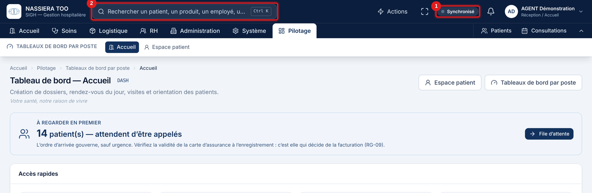
La barre supérieure (1 : pastille de synchronisation ; 2 : recherche globale) et le ruban, ici déplié sur Pilotage.
La barre supérieure contient, de gauche à droite :
le logo et le nom de la clinique ;
la recherche globale (« Rechercher un patient, un produit, un employé… ») : elle s’ouvre aussi au clavier par Ctrl K ;
le menu Actions : les raccourcis vers les gestes les plus fréquents, filtrés selon votre rôle ;
le bouton plein écran ;
la pastille de synchronisation ;
la cloche des notifications ;
votre nom, votre rôle et le menu de votre compte.
Le ruban regroupe les écrans par domaine : Accueil, Soins, Logistique, Financier, RH, Administration, Système et Pilotage. Vous ne voyez que les domaines et les écrans permis à votre rôle.
3.3 Utiliser le ruban
Cliquez sur un domaine du ruban (par exemple Soins). Le panneau se déplie et montre les rangées du domaine, chacune avec ses écrans.
Cliquez sur l’écran voulu. L’écran s’ouvre et le panneau se replie.
Pour replier le panneau sans changer d’écran, cliquez de nouveau sur le domaine actif, ou sur la flèche à droite du ruban.
Le ruban déplié sur le domaine Soins, vu par la Réception. Chaque rangée porte le nom de son module.
✅ Astuce
À droite du ruban, les raccourcis Patients et Consultations ouvrent directement les deux écrans les plus utilisés. Le fil d’Ariane, sous le ruban (par exemple Accueil ➔ Soins ➔ Patients & Dossier médical ➔ Répertoire des patients), vous ramène d’un clic au niveau supérieur.
ℹ️ Information
L’onglet Système complet n’est affiché qu’à l’Administrateur système et à la DAF. Les autres rôles n’y voient que la rangée Importation de données, et seulement s’ils détiennent un droit sur un jeu d’import.
3.4 Votre tableau de bord
À la connexion, SIGH-CNT ouvre le tableau de bord de votre rôle (par exemple Tableau de bord — Accueil pour la Réception). Il présente en premier ce qui demande votre attention (encadré À regarder en premier), puis vos Accès rapides.
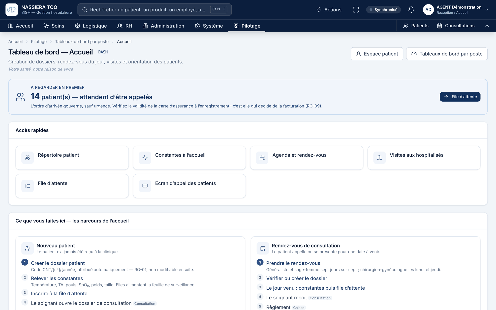
Le tableau de bord de la Réception : le premier encadré dit ce qui attend, avec un bouton pour y aller.
3.5 La pastille de synchronisation
Votre poste garde ses données sur place et les échange avec le poste mère de la clinique. Vous pouvez donc travailler même quand le réseau est coupé. La pastille de la barre supérieure dit toujours où en est l’échange :
Libellé de la pastille
Ce que cela veut dire
Que faire
Synchronisé (vert)
Le poste est à jour avec le poste mère.
Rien.
Synchronisation…
Un échange est en cours.
Rien, continuez à travailler.
En retard
Le dernier échange réussi date un peu.
Continuez ; signalez-le s’il dure.
Hors ligne · depuis …
Le poste mère ne répond pas. Vos saisies sont gardées sur le poste.
Continuez à travailler. Vos gestes partiront au retour du réseau.
… · N en attente
N gestes saisis sur ce poste n’ont pas encore été acceptés par la mère.
Ne fermez pas le poste avant le retour de la connexion si possible.
… · N à traiter
La mère a refusé N gestes. Chaque refus porte sa cause et le geste qui le corrige.
Ouvrez l’écran « À traiter » et corrigez.
Poste suspendu (rouge)
L’administrateur a suspendu ce poste.
Contactez l’administrateur.
ℹ️ Information
Sur la maquette, la pastille affiche des libellés voisins : « Synchronisé », « Envoi en cours… », « Synchronisé il y a N s » et « Hors ligne depuis N min, N geste(s) en attente ». Le sens est le même.
ℹ️ Information
Ce qui change quand le poste est hors ligne. Vous continuez à saisir, encaisser et imprimer. Deux limites protègent les règles : le poste ne sort du stock que sa part du stock connu (au-delà, refus nommé, jamais de stock négatif), et quand sa plage de numéros est épuisée, un dossier reçoit un code provisoire, jamais un numéro inventé. Une validation attendue d’un autre poste (DAF, Direction) attend le retour du réseau.
✅ Astuce
Le guide Panne de connexion (docs/guides/PANNE-DE-CONNEXION.md) détaille ce qui continue, ce qui attend et ce qui se passe au retour. En résumé : continuez à saisir, n’effacez rien, et laissez le poste allumé au retour du réseau.
3.6 Les notifications
La cloche de la barre supérieure annonce les alertes qui vous concernent : un résultat validé, une décision en attente, un produit sous le seuil, une péremption proche, etc. Le nombre d’alertes en attente s’affiche sur la cloche.
Cliquez sur la cloche. La liste des alertes s’ouvre.
Cliquez sur une alerte pour ouvrir l’écran concerné.
Traitez l’alerte sur l’écran ; elle disparaît de la liste une fois acquittée.
La cloche des notifications dans la barre supérieure (poste de la caisse).
ℹ️ Information
Aucune donnée de santé ne quitte la clinique dans une alerte, un son ou un message : une notification dit « un résultat est prêt », jamais le résultat lui-même.
3.7 Le menu Actions et la recherche globale
Le menu Actions donne accès en un clic aux gestes fréquents : Nouveau dossier patient, Patient externe : analyses, Nouvelle consultation, Nouvelle admission, Nouvelle facture, Encaisser un paiement, Assurés & cartes, Demande d’analyse, Mouvement de stock, Bon d’expression de besoins et Éditer un état. Seuls ceux permis à votre rôle s’affichent.
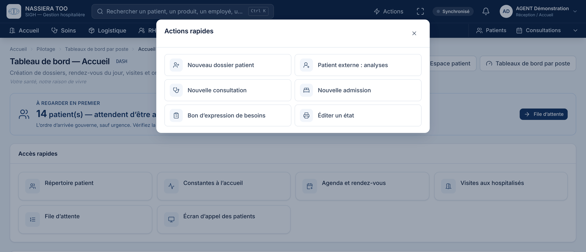
Le menu Actions ouvert par la Réception : seuls les raccourcis permis à ce rôle sont proposés.
La recherche globale trouve un patient, un produit, un employé ou un écran. Elle connaît aussi le contenu des écrans : chercher « péremption » ouvre directement l’onglet Péremptions des alertes de stock.
3.8 Verrouillage et fin de session
Après quinze minutes sans activité, l’écran se verrouille (Session verrouillée). Votre session n’est pas fermée : saisissez votre mot de passe et cliquez sur Déverrouiller pour retrouver l’écran exact où vous étiez.
⚠️ Attention
Quand vous quittez votre poste, fermez votre session par le menu de votre compte (en haut à droite). Un poste de l’accueil ou de la caisse est partagé : la personne suivante doit ouvrir SA session, jamais travailler dans la vôtre.
Chapitre 4Les gestes communs à tous les écrans
Tous les écrans de liste fonctionnent de la même façon : chercher, filtrer, créer, consulter, archiver, exporter, imprimer.
4.1 Chercher et filtrer dans un tableau
Les écrans de liste (patients, factures, mouvements de stock…) partagent la même barre d’outils.
La barre d’outils d’un tableau : 1 recherche, 2 Colonnes, 3 Exporter, 4 Nouveau, 5 Importer les données.
Tapez quelques lettres dans le champ de recherche (par exemple « Rechercher un patient… »). Le tableau se filtre à mesure.
Affinez avec les listes de filtres placées à côté (par exemple Sexe, Couverture, Quartier).
Cliquez sur l’en-tête d’une colonne pour trier.
Cliquez sur Colonnes pour masquer ou réafficher des colonnes.
ℹ️ Information
Beaucoup d’écrans ont aussi des filtres de période : Aujourd’hui, Sept derniers jours, Toute la période. Les onglets au-dessus du tableau (par exemple Tous les patients et Archivés) indiquent leur nombre de lignes.
4.2 Créer, consulter, modifier
Cliquez sur Nouveau (ou sur le bouton nommé de l’écran : Nouveau relevé, Nouvelle commande…).
Remplissez le formulaire. Les champs marqués d’un astérisque (*) sont obligatoires.
Validez avec le bouton du formulaire (Créer, Enregistrer ou un bouton nommé comme Ouvrir le dossier).
Dans la colonne Actions de chaque ligne, des icônes donnent les gestes permis : Consulter, Imprimer l’état, Modifier, Archiver. Survolez une icône pour lire son nom.
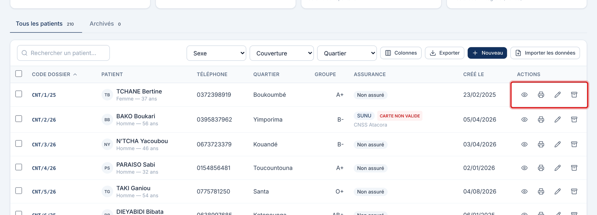
La colonne Actions : les icônes Consulter, Imprimer l’état, Modifier et Archiver.
4.3 Archiver au lieu de supprimer
Dans SIGH-CNT, rien ne se supprime (règle RG-14). Une fiche qui n’a plus lieu d’être s’archive : elle quitte la liste courante mais reste consultable dans l’onglet Archivés, et l’archivage peut être annulé.
Dans la ligne à retirer, cliquez sur l’icône Archiver.
Confirmez. La fiche passe dans l’onglet Archivés.
Pour la rétablir, ouvrez l’onglet Archivés et utilisez l’action de restauration de la ligne.
L’onglet Archivés garde les fiches retirées de la liste courante.
⚠️ Attention
Une pièce émise (facture, reçu, bon, résultat validé) ne se réécrit jamais. Pour corriger une facture, on émet un avoir ; pour corriger un résultat validé, on produit une version rectificative. Ces gestes sont décrits dans les chapitres concernés.
4.4 Exporter et imprimer les lignes d’un tableau
Le bouton Exporter sort les lignes d’un tableau dans un fichier ou sur papier. Cochez d’abord les lignes voulues si vous ne voulez pas tout sortir : la sélection est gardée d’une page du tableau à l’autre.
Cochez les lignes à sortir (case en début de ligne), ou aucune pour tout sortir.
Cliquez sur Exporter. La fenêtre Exporter les données s’ouvre.
Choisissez les lignes : Les N lignes cochées, Les N lignes filtrées (si un filtre est actif) ou Tout exporter.
Choisissez le format : Excel (.xlsx), CSV ou PDF / Impression.
Validez. Le fichier se télécharge, ou l’aperçu d’impression s’ouvre.
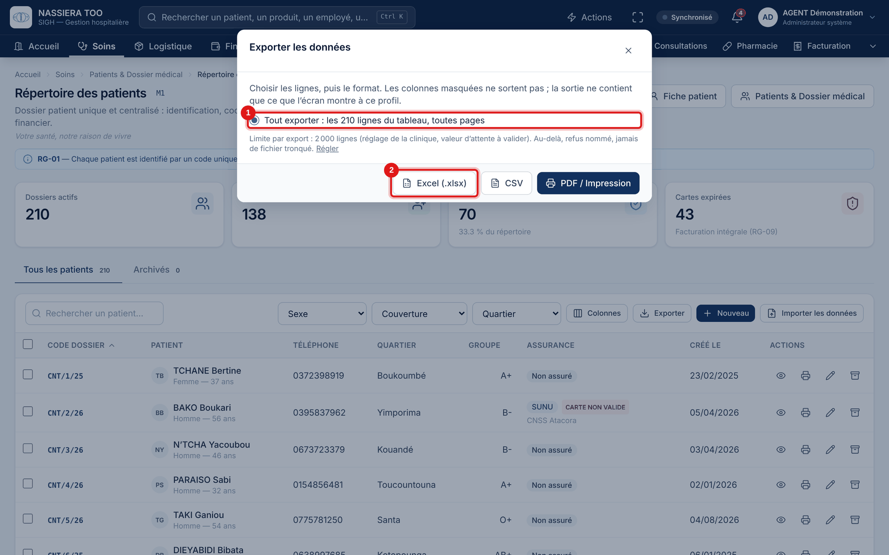
La fenêtre Exporter les données : choix des lignes, puis du format.
ℹ️ Information
L’export ne contient que ce que l’écran vous montre : les colonnes masquées ne sortent pas, et un rôle ne peut pas exporter ce qu’il ne voit pas. Chaque export est inscrit au journal (RG-12).
⚠️ Attention
Une limite de lignes par export est réglée par la clinique. Au-delà, l’export est refusé en le disant, jamais tronqué. Filtrez le tableau pour sortir moins de lignes. Exporter est un geste réservé (« exporter_donnees ») : sans lui, le bouton Exporter est absent.
4.5 Imprimer un document officiel
Tout document édité par SIGH-CNT (facture, reçu, bon, ordonnance, résultat, état) porte l’en-tête officiel de la clinique et un pied normalisé : pagination, date, utilisateur et identifiant du document. Trois formats existent :
A4 : factures, ordonnances, résultats, états ;
rouleau 80 mm : tickets de caisse, imprimés sur l’imprimante de la caisse ;
carte CR80 : badges du personnel.
Cliquez sur le bouton d’impression de l’écran (Imprimer, Éditer l’état, Imprimer la fiche…) ou sur l’icône d’impression de la ligne.
Vérifiez l’aperçu.
Choisissez l’imprimante et imprimez.
ℹ️ Information
Les totaux d’un état sont toujours calculés à partir des lignes, jamais saisis. Si une valeur ne peut pas être calculée, l’état l’écrit « non calculable » : ce n’est pas zéro.
4.6 Importer des données
Certains écrans portent le bouton Importer les données (répertoire des patients, stock gros, transferts, inventaires, courriers…). Il sert à reprendre des listes existantes depuis un classeur.
Cliquez sur Importer les données.
Téléchargez le modèle proposé et remplissez-le.
Déposez le fichier : SIGH-CNT le vérifie ligne par ligne et affiche les erreurs avant toute écriture.
Confirmez l’import. Le lot apparaît dans l’historique des lots ; il peut être annulé.
L’écran Jeux d’import et historique des lots (rangée Importation de données).
ℹ️ Information
Le même fichier importé deux fois est reconnu comme le même lot : il n’est pas écrit deux fois. Les droits d’import se règlent jeu par jeu.
Cliquez sur Nouveau. La fenêtre Nouveau rendez-vous s’ouvre.
Choisissez le Dossier patient. Pour un nouveau venu sans dossier, renseignez Nom, Prénom(s), Quartier / résidence et Numéro de téléphone.
Choisissez le Praticien, le Type, la Date et heure et le Motif.
Cliquez sur Créer.
La fenêtre Nouveau rendez-vous.
L’onglet Agenda — à venir, reportés, non honorés liste les rendez-vous à suivre ; l’onglet Honorés (apurés de l’agenda) garde ceux qui ont eu lieu. L’écran Agenda présente la semaine en cours, avec le bouton Nouveau rendez-vous.
L’Agenda de la semaine.
Qui voit quoi : « Rendez-vous & visites » (droits d’origine de la clinique)
La File d’attente suit le patient de poste en poste. Ses onglets sont les postes de la clinique : Accueil, Consultation, Caisse, Salle de prélèvement, Pharmacie, Salle de soins, Imagerie médicale.
La tension se saisit en deux nombres, en cmHg (par exemple 12 et 8), et la diurèse en mL. Une valeur hors des bornes de contrôle est signalée dans la colonne Contrôle.
5.4 Accueillir un patient externe (analyses ou imagerie)
Un patient adressé de l’extérieur pour une analyse ou un examen d’imagerie n’a pas besoin d’un dossier complet.
Ouvrez Accueil ➔ Patients & constantes ➔ Patient externe.
Cliquez sur Nouvelle demande externe.
Renseignez le patient, l’examen et le prescripteur extérieur, puis enregistrez.
Suivez la demande dans les onglets Demandes — analyses, Demandes — imagerie médicale et Résultats.
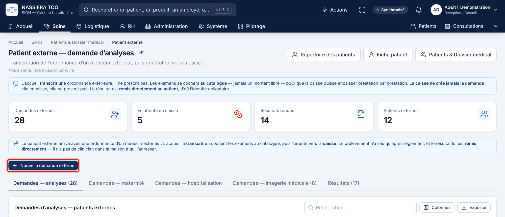
L’écran Patient externe et son bouton Nouvelle demande externe.
Qui voit quoi : « Patient externe » (droits d’origine de la clinique)
Peut agir (créer, modifier)
Administrateur système, Directrice de l’Administration et des Finances (DAF), Médecin, Infirmier / Sage-femme, Biologiste médical, Réception / Accueil, Chirurgien
Consulte seulement
Direction / Gérance, Technicien d’échographie, Anesthésiste — Réanimateur
Ne voit pas l’écran
tous les autres rôles
5.5 Enregistrer un courrier
L’écran Accueil ➔ Courriers & orientation ➔ Courriers (départ / arrivée) tient le registre du courrier. Il est décrit au chapitre Administration.
Chapitre 6Patients et dossier médical
Le répertoire des patients est la porte d’entrée de tout le parcours : un patient, un dossier, un code unique.
6.1 Créer un dossier patient
Ouvrez Soins ➔ Patients & Dossier médical ➔ Répertoire des patients, ou utilisez Actions ➔ Nouveau dossier patient.
Vérifiez d’abord, avec la recherche, que le patient n’a pas déjà un dossier.
Cliquez sur Nouveau. La page Identité, coordonnées et couverture s’ouvre.
Renseignez Nom, Prénom(s), Sexe, Date de naissance et Téléphone (obligatoires), puis Groupe sanguin, Quartier, Adresse et Personne à prévenir.
Cochez Accepte de recevoir des SMS de la clinique si le patient l’accepte.
Renseignez si besoin les Antécédents, les Allergies connues et le Traitement en cours.
Si le patient est assuré, renseignez Compagnie d’assurance, Numéro de police, Taux de prise en charge (%) et Expiration de la carte.
Cliquez sur Ouvrir le dossier. Le code dossier est attribué automatiquement.
La page de création du dossier ; le bouton Ouvrir le dossier enregistre.
ℹ️ Information
Le code patient est unique et non modifiable (règle RG-01). Il est généré automatiquement au format CNT/[n° d’ordre]/[année], par exemple CNT/1/25. Vous ne le saisissez jamais. Les anciens dossiers gardent leur code d’origine (forme CNT530/25).
⚠️ Attention
La date d’expiration de la carte d’assurance compte : la prise en charge ne s’applique que si la carte est valide à la date de la facture (RG-09). Sinon, le patient paie le prix non assuré.
Qui voit quoi : « Répertoire des patients » (droits d’origine de la clinique)
Peut agir (créer, modifier)
Administrateur système, Directeur Médical, Directrice de l’Administration et des Finances (DAF), Médecin, Infirmier / Sage-femme, Réception / Accueil, Chirurgien
La Fiche patient réunit tout le dossier dans des onglets : Administratif, Médical, Antécédents & allergies, Soins, Hospitalisations, Maternité, Analyses & résultats, Imagerie médicale, Ordonnances, À domicile, Financier, Assurance et Traçabilité.
Dans le répertoire, cliquez sur l’icône Consulter de la ligne du patient.
Parcourez les onglets.
Utilisez Modifier le dossier pour corriger les coordonnées, Imprimer la fiche pour l’imprimer, ou Fiche de consultation pour ouvrir une consultation.
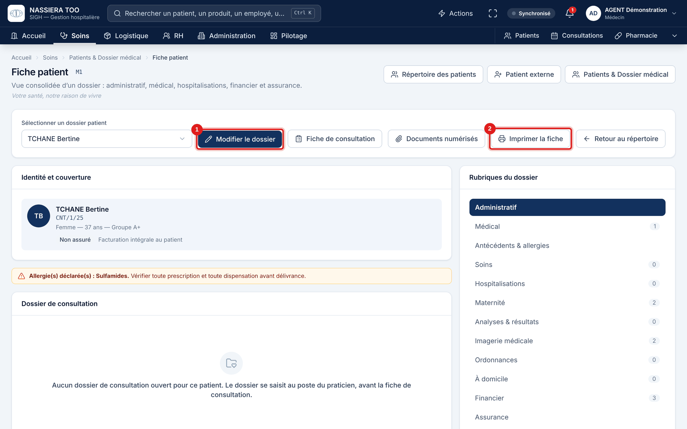
La fiche patient vue par un Médecin : 1 Modifier le dossier, 2 Imprimer la fiche.
ℹ️ Information
L’onglet Traçabilité montre qui a fait quoi sur le dossier, et quand (RG-12). Les onglets médicaux ne sont visibles que des soignants habilités (RG-13).
Choisissez le dossier, le type de document et le fichier, puis enregistrez.
ℹ️ Information
Le texte d’un scan peut être lu par la machine (lecture locale, sur le poste : rien ne sort de la clinique). Une correction de ce texte est une version signée et journalisée ; elle est réservée au geste « Corriger le texte lu par machine d’un scan ».
Chapitre 7Consultations et prescriptions
Le médecin consulte, prescrit, et la prescription suit le patient vers la caisse, la pharmacie, le laboratoire ou la salle de soins.
7.1 Le parcours d’une consultation
La fiche de consultation affiche l’Enchaînement du parcours, en cinq étapes :
Accueil, Zone 1 : identité, couverture et constantes saisies à l’accueil.
Dossier de consultation : anamnèse, antécédents, examen clinique, enregistrés d’abord.
Fiche de consultation : synthèse, diagnostic, conduite à tenir.
Caisse : une facture globale (part assureur et part patient) ; la délivrance, le prélèvement et l’imagerie se débloquent au règlement.
ℹ️ Information
Chaque ligne de prescription porte un prix strictement positif, lu au référentiel des tarifs à la date de la pièce. Quand un prix manque, la ligne l’affiche « prix à définir » avec sa cause : ce n’est jamais zéro. Les médicaments sont facturés au prix d’achat, sans marge (RG-02).
Ouvrez d’abord Soins ➔ Consultations & prescriptions ➔ Dossiers de consultation et enregistrez l’anamnèse et l’examen clinique du patient.
Ouvrez la Fiche de consultation sur ce dossier (depuis le dossier, ou par Fiche de consultation sur la fiche patient). Vérifiez le Dossier patient affiché.
Remplissez Synthèse, diagnostic et conduite à tenir.
Pour chaque médicament, choisissez-le dans la liste Médicament, précisez la posologie, puis cliquez sur Ajouter un médicament. Ajoutez de même les analyses et les examens d’imagerie.
Cliquez sur Enregistrer et prescrire. Les prescriptions partent vers la caisse puis vers les postes d’exécution.
Imprimez avec Éditer l’ordonnance et Éditer le bulletin d’analyses.
La section Prescription de la fiche : Ajouter un médicament ajoute une ligne. Analyses et imagerie se choisissent dessous.
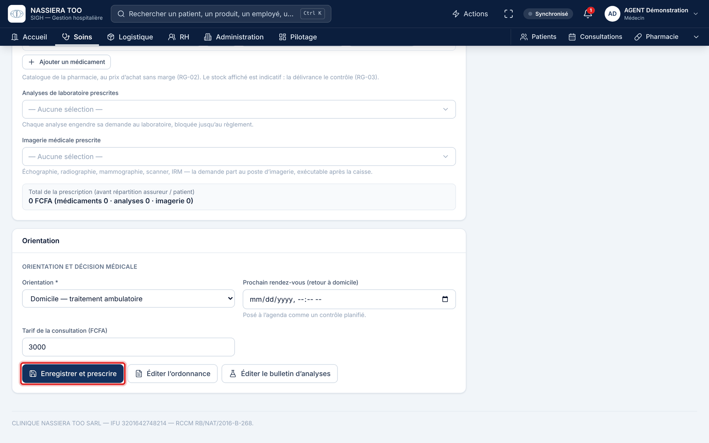
Le bouton Enregistrer et prescrire, en bas de la fiche.
⚠️ Attention
Sans dossier de consultation enregistré, la fiche refuse et le dit : « Fiche impossible sans dossier ». Le bouton Ouvrir les dossiers de consultation vous y conduit. Les constantes ne se saisissent pas sur la fiche : elles se relèvent à l’accueil.
⚠️ Attention
Une ordonnance enregistrée est une pièce émise : elle ne se réécrit pas. Pour changer un traitement, faites une nouvelle prescription.
7.4 Suivre les prescriptions et les ordonnances
L’écran Soins ➔ Consultations & prescriptions ➔ Prescriptions liste toutes les prescriptions, avec les onglets Toutes, Prescriptions de soins, Ordonnances et En cours. Les colonnes Destinataire et Règlement disent où en est chaque ligne. Le bouton Nouvelle prescription de soins prescrit un acte infirmier hors consultation.
L’écran Prescriptions et son bouton Nouvelle prescription de soins.
L’écran Ordonnances montre, pour chaque ordonnance, l’état à la Caisse et à la Pharmacie.
7.5 Administrer un soin en salle de soins
Ouvrez Soins ➔ Consultations & prescriptions ➔ Salle de soins.
Repérez la ligne (colonnes Prescription, Patient, Acte ou produit).
Cliquez sur Administrer et confirmez ce qui a été fait.
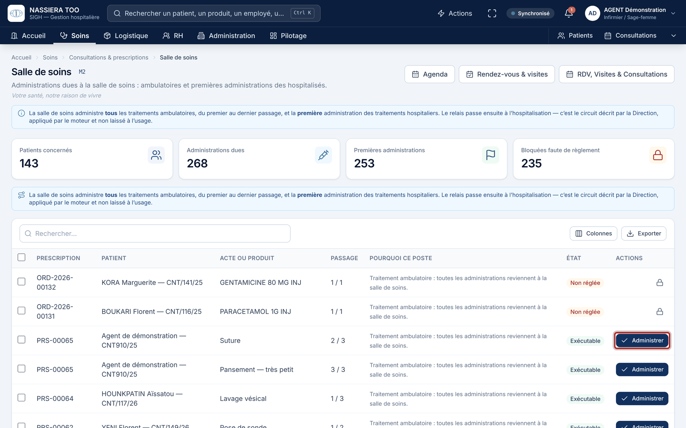
La salle de soins : le bouton Administrer enregistre l’acte réalisé.
Qui voit quoi : « Salle de soins » (droits d’origine de la clinique)
Cliquez sur Nouvelle demande, choisissez le patient, l’examen et la modalité, puis enregistrez.
Une fois l’examen réalisé, l’opérateur clique sur Saisir le CR (ou Poursuivre le CR) pour rédiger le compte rendu.
Cliquez sur Rendre pour mettre le compte rendu à disposition du prescripteur.
Les demandes d’imagerie : 1 Nouvelle demande, 2 Saisir le CR.
Les tableaux Tableau Échographie, Tableau Radiographie, Tableau Mammographie, Tableau Scanner et Tableau IRM listent les comptes rendus par modalité ; la Galerie des clichés regroupe les images.
Chapitre 8Hospitalisation
Admettre un patient dans un lit, suivre ses soins, puis organiser sa sortie dans les règles.
8.1 Admettre un patient
Ouvrez Soins ➔ Hospitalisation ➔ Admissions, ou utilisez Actions ➔ Nouvelle admission.
Cliquez sur Nouveau. La fenêtre Nouveau admission s’ouvre.
Choisissez le Dossier patient, le Lit et l’Infirmier référent.
Renseignez la Date d’entrée, le Type de prise en charge, le Diagnostic d’entrée et les Symptômes constatés.
Cliquez sur Créer.
La fenêtre d’admission.
ℹ️ Information
Un lit ne porte qu’une seule admission active. Un lit occupé n’est pas proposé.
Qui voit quoi : « Admissions » (droits d’origine de la clinique)
Le Plan des lits montre chaque chambre et chaque lit, avec le patient et la durée du séjour, ou la mention Disponible. L’écran Chambres & lits tient la liste des chambres.
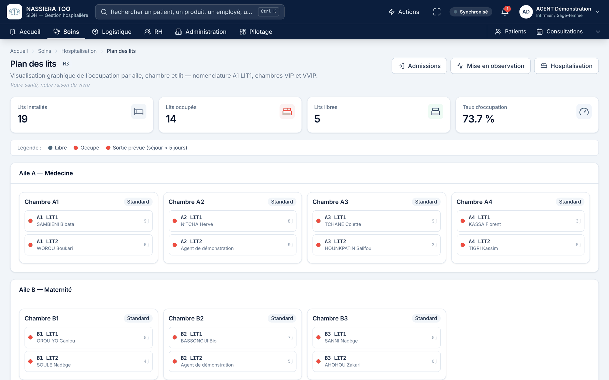
Le plan des lits.
8.3 Suivre les soins du patient hospitalisé
Plusieurs écrans de la rangée Hospitalisation servent au suivi quotidien :
Feuille de soins : chaque acte réalisé (bouton Nouveau) ;
Administration des traitements : les onglets À administrer et Historique, avec le bouton Administrer ;
Feuille de température, Fiche de surveillance, Score de Glasgow, Surveillance transfusionnelle ;
Demande d’examen, Bons de pansement, Rapport médical, Visites aux hospitalisés.
⚠️ Attention
Certaines check-listes et bornes de surveillance portent la mention « à valider » : elles attendent la validation écrite du professionnel désigné. Utilisez-les comme aide, pas comme référence définitive.
8.4 Organiser la sortie d’un patient
Une sortie d’hospitalisation exige quatre conditions (règles RG-06 à RG-08) : le solde apuré, la signature du patient, la signature de l’infirmier et le constat du gardien.
Ouvrez Soins ➔ Hospitalisation ➔ Sorties d’hospitalisation. La colonne Solde (RG-06) montre ce qui reste dû.
Si le solde n’est pas nul, envoyez la famille à la caisse avant d’aller plus loin.
Dans la ligne du patient, cliquez sur Préparer la sortie.
Renseignez la Date de sortie, l’État à la sortie et les Consignes de sortie et suivi.
Cochez Signature du patient recueillie, Signature de l’infirmier traitant et Constat du gardien effectué au fur et à mesure.
Imprimez le bon avec Éditer le bon de sortie, puis cliquez sur Finaliser la sortie. Le lit redevient disponible.
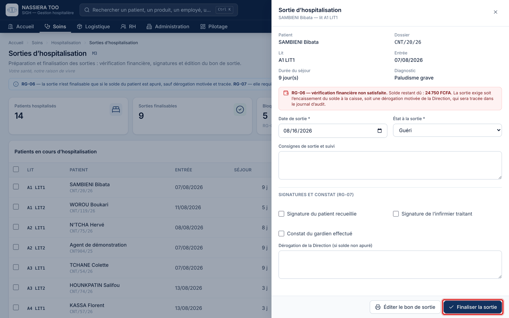
La fenêtre Sortie d’hospitalisation ; Finaliser la sortie clôt le séjour.
⚠️ Attention
Si le solde n’est pas apuré, la sortie demande une Dérogation de la Direction (si solde non apuré). Sans elle, la sortie ne se finalise pas.
8.5 Sortie contre avis médical
Ouvrez Soins ➔ Hospitalisation ➔ Sortie contre avis médical.
Renseignez le patient et le motif de la sortie (obligatoire), et consignez l’avis du Procureur s’il a été requis.
Cliquez sur Enregistrer.
🛑 Alerte
Une sortie contre avis médical engage la clinique. Le motif doit être précis et complet : le document enregistré ne se réécrit pas.
Chapitre 9Maternité, naissances et décès
Du suivi de grossesse au registre des naissances.
9.1 Les écrans de la maternité
La rangée Soins ➔ Maternité, Naissances & Décès réunit : Dossier obstétrical, Suivi maternité, CPN & carte maternelle, Partogramme, Accouchements, Dossier bébé & soins du nouveau-né, Consultations post-natales (CPoN), Planification familiale, Registre SONUB / SONUC, Registre PTME, Soins curatifs & urgences maternité, Comptes rendus de maternité, Registre des naissances et Registre des décès.
Qui voit quoi : « Accouchements » (droits d’origine de la clinique)
Renseignez la parturiente, la date et l’heure, le type d’accouchement, les actes associés, la durée du travail, les complications, le praticien et l’issue.
Enregistrez, puis déclarez le nouveau-né dans le Registre des naissances (bouton Nouveau) : sexe, poids, Apgar, périmètres.
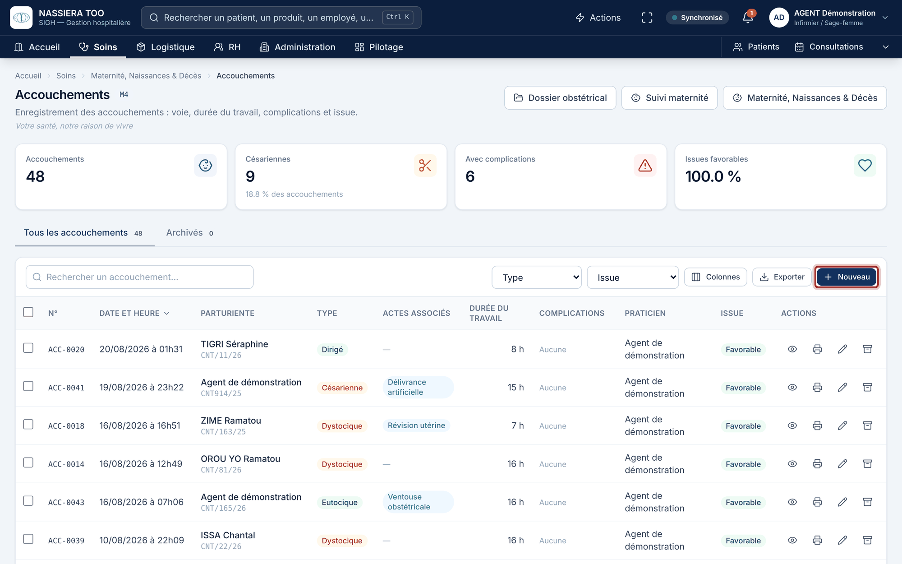
L’écran Accouchements et son bouton Nouveau.
ℹ️ Information
Les statistiques de la maternité (Statistiques maternité & naissances, domaine Pilotage) sont calculées à partir de ces registres.
Chapitre 10Laboratoire
Une analyse passe par quatre étapes : demande, prélèvement, saisie du résultat, validation biologique.
10.1 Le circuit d’une analyse
La demande arrive du médecin (prescription), de la maternité, de l’hospitalisation ou d’un patient externe.
Le patient règle à la caisse : le prélèvement n’est possible qu’après règlement.
Le préleveur enregistre le prélèvement et le transmet au laboratoire.
Le laboratoire saisit le résultat, puis le biologiste le valide biologiquement : il devient visible du prescripteur.
Qui voit quoi : « Saisie des résultats » (droits d’origine de la clinique)
Direction / Gérance, Technicien d’échographie, Chirurgien, Anesthésiste — Réanimateur
Ne voit pas l’écran
tous les autres rôles
10.2 Prélever et transmettre
Ouvrez Soins ➔ Laboratoire ➔ Salle de prélèvement. Trois onglets : À prélever, À transmettre, Reçus au laboratoire.
Dans l’onglet À prélever, imprimez si besoin le bon (icône Imprimer le bon d’analyse).
Cliquez sur l’icône Enregistrer le prélèvement de la ligne.
Dans l’onglet À transmettre, cliquez sur Transmettre au laboratoire.
La salle de prélèvement et ses trois onglets.
ℹ️ Information
Un cadenas Règlement requis avant prélèvement remplace l’action tant que la caisse n’a pas encaissé. Envoyez le patient à la caisse.
10.3 Saisir et valider les résultats
Ouvrez Soins ➔ Laboratoire ➔ Saisie des résultats. Trois onglets : À saisir, À valider biologiquement, Rendus au prescripteur.
Dans À saisir, cliquez sur Saisir le résultat, renseignez les valeurs et enregistrez.
Le biologiste ouvre À valider biologiquement, relit l’ensemble et clique sur Valider biologiquement (ou Valider la sélection pour plusieurs lignes).
Le résultat passe dans Rendus au prescripteur.
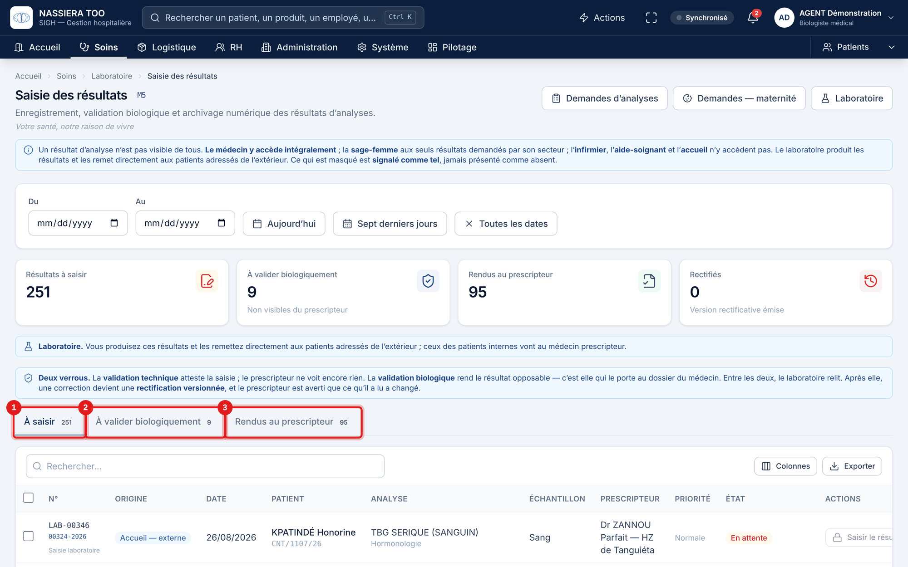
La saisie des résultats : les trois onglets du circuit.
🛑 Alerte
Une fois validés, les résultats sont visibles du prescripteur. Au-delà, une correction produit une version rectificative et le prescripteur en est averti : relisez avant de valider.
⚠️ Attention
En l’absence du biologiste médical, la validation se fait par intérim (bouton Valider par intérim) et le dit. Valider un seuil de variation brutale est un geste réservé au Biologiste médical. Les bornes marquées « à valider » attendent la validation écrite du biologiste.
10.4 Imprimer les résultats
Ouvrez Soins ➔ Laboratoire ➔ Impression des résultats.
Sélectionnez la ligne (colonne Règlement à jour).
Cliquez sur Imprimer.
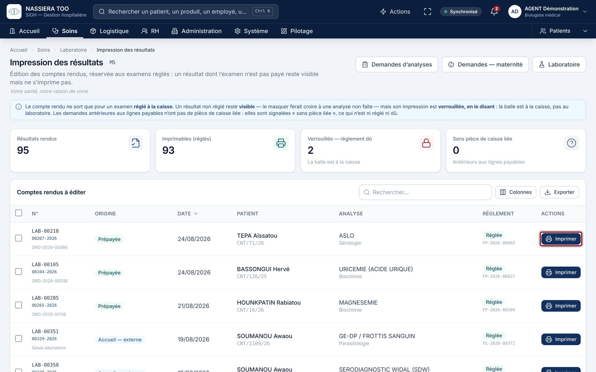
Impression des résultats.
Les autres écrans du laboratoire : Catalogue des analyses, Unités de mesure, Valeurs de référence, Comparatif des résultats, Réactifs & consommables, Banque de sang, Donneurs & transfusions et les statistiques.
Chapitre 11Pharmacie et stocks
Délivrer les médicaments, tenir le stock gros et le stock détail, transférer, inventorier, déclarer une perte.
11.1 Les règles du stock
Le stock ne devient jamais négatif (RG-03) : une sortie supérieure au stock est refusée.
Toute sortie a un justificatif : ordonnance, bon de transfert, constat de perte (colonne Justificatif (RG-03)).
FEFO (RG-05) : le premier lot à périmer sort le premier. L’onglet Ordre de sortie FEFO de l’écran Lots & péremptions (FEFO) le montre.
Prix d’achat, sans marge (RG-02) : un médicament est facturé au prix d’achat ; le coût moyen (CUMP) est calculé automatiquement.
Qui voit quoi : « Stock détail (pharmacie) », « Dispensation » (droits d’origine de la clinique)
Peut agir (créer, modifier)
Administrateur système, Directrice de l’Administration et des Finances (DAF), Gestionnaire de Stock, Caissier — Dispensaire (Pharmacie)
Consulte seulement
Direction / Gérance, Médecin, Comptable
Ne voit pas l’écran
tous les autres rôles
11.2 Délivrer une ordonnance encaissée
Ouvrez Logistique ➔ Pharmacie & Stocks ➔ Dispensation. La liste File des délivrances (ordonnances encaissées) montre ce qui attend.
Repérez le patient (colonnes Origine, Patient, À faire).
Cliquez sur Délivrer dans la ligne.
Vérifiez les produits et les quantités, puis confirmez. Le stock détail est débité, lot par lot, dans l’ordre FEFO.
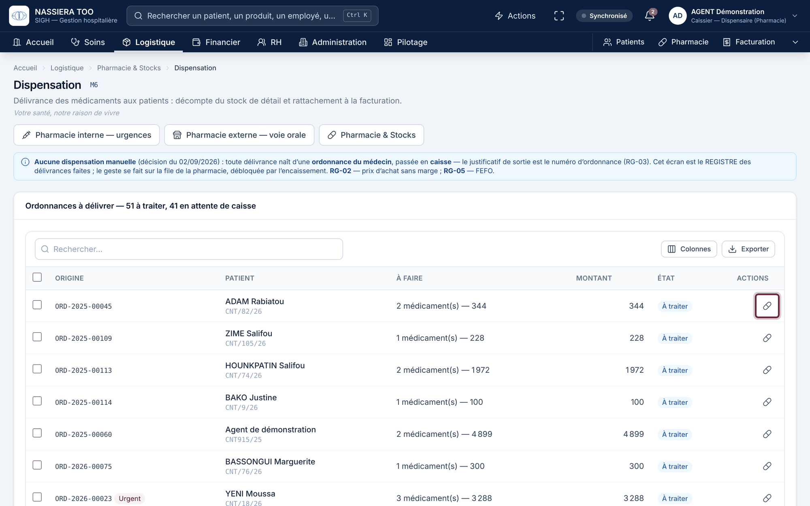
La dispensation, vue de la caisse du dispensaire : le bouton Délivrer de la ligne.
ℹ️ Information
Les écrans Pharmacie interne — urgences et Pharmacie externe — voie orale présentent les mêmes délivrances par circuit ; le bouton Délivrer y demande une confirmation produit par produit.
11.3 Consulter le stock gros et le stock détail
Le Stock gros (magasin) et le Stock détail (pharmacie) listent chaque article : quantité, seuil, CUMP, valeur et emplacement. Le bouton Éditer l’état imprime l’état du stock.
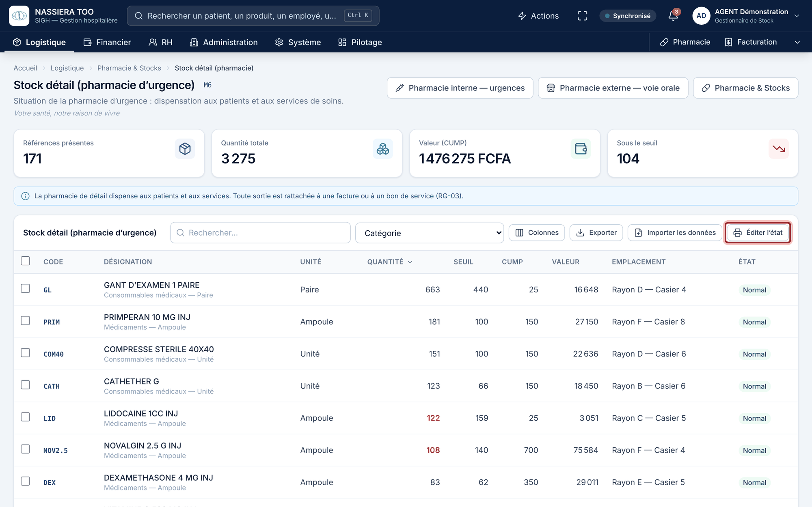
Le stock détail ; Éditer l’état imprime l’état valorisé.
11.4 Transférer du stock gros vers le stock détail
Renseignez Article, Nature de la perte, Magasin concerné, Quantité perdue, Date du constat, Justificatif, Constaté par et les Circonstances.
Cliquez sur Déclarer la perte, puis imprimez le constat avec Éditer le constat.
La fenêtre Déclarer une perte.
11.7 Surveiller les alertes de stock
L’écran Alertes & seuils a trois onglets : Ruptures, Sous le seuil et Péremptions. Le bouton Ouvrir les bons de besoins (M7) enchaîne sur une demande d’achat.
Les alertes de stock : produits sous le seuil et péremptions.
ℹ️ Information
Le préavis de péremption est un réglage de la clinique, enregistré en base.
Les autres écrans : Tableau de bord stock, Référentiel produits, Mouvements de stock, Lots & péremptions (FEFO), Étiquetage & emplacements, Suivi des ventes, Point du stock valorisé.
Chapitre 12Achats et fournisseurs
Du besoin exprimé par un service à la réception contrôlée de la livraison.
Renseignez Date, Service demandeur, Demandeur, Catégorie du besoin et le Motif de la demande ; cochez Besoin urgent si nécessaire.
Ajoutez chaque article avec sa Qté demandée (bouton Ajouter).
Cliquez sur Créer le bon.
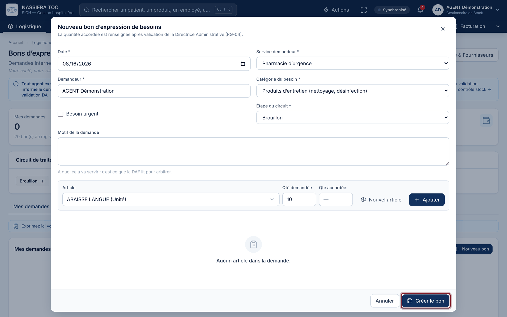
La fenêtre Nouveau bon d’expression de besoins.
Les onglets suivent le circuit : Mes demandes, Arbitrage & validation DAF, Besoins validés — achats & logistique, Tous les bons. La DAF fixe la Qté accordée.
12.2 Passer une commande
Ouvrez Logistique ➔ Achats & Fournisseurs ➔ Bons de commande.
Cliquez sur Nouvelle commande.
Renseignez Date de la commande, Fournisseur et Statut.
Ajoutez les articles (Article, Quantité, Prix unitaire, puis Ajouter).
Cliquez sur Créer la commande.
Les bons de commande : la colonne Validée par (RG-04) dit qui a validé.
⚠️ Attention
Une commande de stock gros doit être validée par la Directrice Administrative avant d’être transmise au fournisseur (RG-04). La colonne Validée par (RG-04) le montre. Ne transmettez jamais une commande non validée.
Qui voit quoi : « Bons de commande » (droits d’origine de la clinique)
Peut agir (créer, modifier)
Administrateur système, Directrice de l’Administration et des Finances (DAF), Biologiste médical, Gestionnaire de Stock, Assistant Comptable
Dans la ligne de la commande, cliquez sur Réceptionner.
Renseignez le N° bordereau de livraison, la Date de réception et les contrôleurs (Contrôleur 1, Contrôleur 2, Contrôleur 3 (facultatif)).
Cliquez sur Valider la réception. Le stock est crédité.
La réception d’une commande, contrôlée par plusieurs personnes.
Un écart entre commande et livraison se suit dans Écarts de livraison ; les procès-verbaux se dressent dans PV de réception — consommables et PV de réception — réactifs. Les factures du fournisseur se saisissent dans Factures fournisseurs.
Chapitre 13Facturation et caisse
Facturer, encaisser, rendre la monnaie juste, arrêter la caisse chaque jour.
13.1 Établir une facture
Ouvrez Financier ➔ Facturation & Caisse ➔ Nouvelle facture, ou Actions ➔ Nouvelle facture.
Choisissez le patient et la nature de la facture (par exemple Consultation généraliste).
Ajoutez les prestations avec Ajouter. Les prix viennent du référentiel des tarifs : vous ne les saisissez pas.
Cliquez sur Enregistrer et encaisser pour encaisser tout de suite, ou sur Facture pro-forma pour un devis.
Imprimez le Ticket de caisse sur l’imprimante 80 mm.
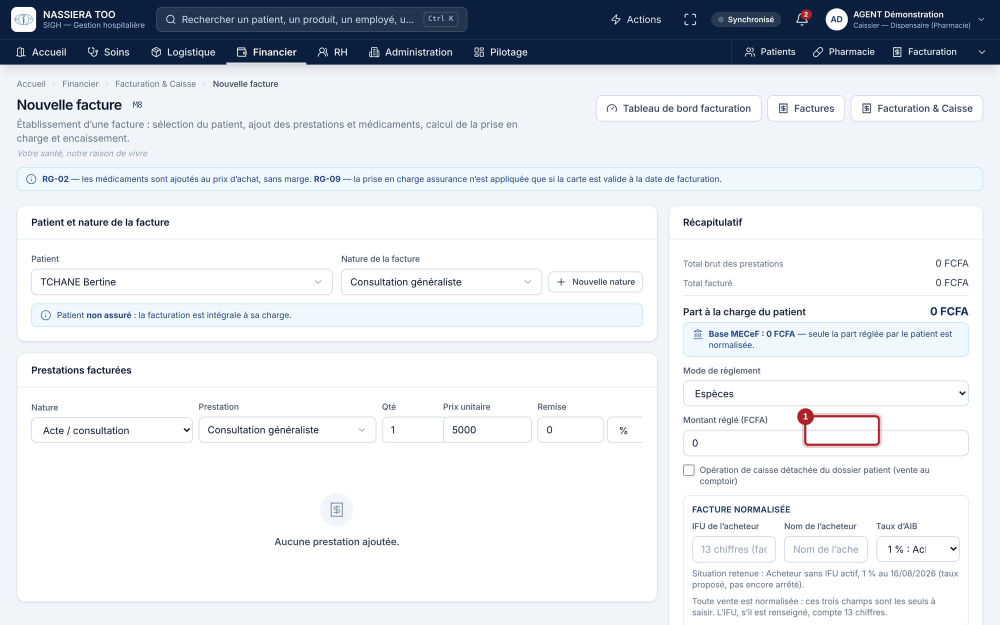
La nouvelle facture : 1 Ajouter, 2 Enregistrer et encaisser.
ℹ️ Information
La grille de prix porte deux prix : non assuré et assuré. SIGH-CNT applique le prix assuré et la part de l’assurance seulement si la carte est valide à la date de la facture (RG-09).
Qui voit quoi : « Nouvelle facture », « Paiements » (droits d’origine de la clinique)
Peut agir (créer, modifier)
Administrateur système, Directrice de l’Administration et des Finances (DAF), Caissier — Dispensaire (Pharmacie), Comptable
Consulte seulement
Direction / Gérance, Directeur Médical, Assistant Comptable
Ne voit pas l’écran
tous les autres rôles
13.2 Encaisser un paiement
Ouvrez Financier ➔ Facturation & Caisse ➔ Paiements. L’onglet À encaisser liste les factures dues.
Cliquez sur Encaisser dans la ligne de la facture.
Saisissez le Montant encaissé (FCFA) et le Mode de règlement ; ajoutez la Référence de la transaction pour un paiement mobile ou bancaire.
Pour une entreprise, renseignez IFU de l’acheteur, Nom de l’acheteur et Taux d’AIB.
Cliquez sur Valider l’encaissement. La pièce de caisse est émise et le reçu s’imprime.
La fenêtre Encaissement.
ℹ️ Information
Un paiement partiel laisse un reste dû : il se suit dans Reliquats et se solde par Régler l’encaissement partiel. L’onglet Historique des règlements garde tous les reçus.
⚠️ Attention
Le MECeF est le boîtier fiscal physique branché à la caisse. La facture normalisée y est certifiée localement. Le branchement du boîtier réel attend les réponses du fournisseur : voir le chapitre MECeF.
Cliquez sur Choisir la facture à rectifier, puis renseignez le Motif de l’avoir et la Suite donnée.
Cliquez sur Émettre l’avoir.
La fenêtre Émettre une facture d’avoir (vue par le Comptable).
⚠️ Attention
Le Caissier consulte les avoirs mais ne les émet pas : le bouton Émettre un avoir est absent de son écran. Adressez-vous au Comptable ou à la DAF.
Les remboursements et annulations se saisissent dans Remboursements & annulations (bouton Nouvelle opération). Les autres écrans : Tableau de bord facturation, Factures, Factures pro-forma, Opérations de caisse, Recettes par période.
Chapitre 14Assurances et créances
Vérifier la carte, appliquer la prise en charge, facturer l’assureur chaque mois.
Une carte expirée à la date de facturation entraîne la facturation intégrale au patient (RG-09). Vérifiez la carte à l’enregistrement, pas à la sortie.
Qui voit quoi : « Assurés & cartes » (droits d’origine de la clinique)
Peut agir (créer, modifier)
Administrateur système, Directrice de l’Administration et des Finances (DAF), Caissier — Dispensaire (Pharmacie), Comptable, Assistant Comptable
Consulte seulement
Direction / Gérance
Ne voit pas l’écran
tous les autres rôles
14.2 Suivre les prises en charge et facturer l’assureur
L’écran Prises en charge détaille, par facture, la Part assureur et la Part patient.
En fin de mois, ouvrez Factures mensuelles assureur et choisissez la compagnie.
Contrôlez l’onglet Relevé des prestations, puis cliquez sur Éditer le relevé et Éditer la facture mensuelle.
Suivez le paiement dans Créances et Relances.
ℹ️ Information
Une garantie et une couverture sont des versions datées : SIGH-CNT lit celle qui était en vigueur à la date de la pièce.
Chapitre 15MECeF : facture normalisée
Le suivi fiscal des factures certifiées par le boîtier MECeF de la caisse.
15.1 Suivre les factures normalisées
La rangée Financier ➔ MECeF — Facture normalisée comprend : Tableau de bord fiscal, Factures normalisées, Transmission & réponses, Avoirs & annulations, Journal des transactions et Configuration fiscale.
Ouvrez Factures normalisées.
Lisez la colonne Statut fiscal de chaque facture.
Ouvrez Transmission & réponses pour traiter les transmissions en attente et les rejets.
Les factures normalisées et leur statut fiscal.
Qui voit quoi : « Factures normalisées » (droits d’origine de la clinique)
Peut agir (créer, modifier)
Administrateur système, Directrice de l’Administration et des Finances (DAF), Caissier — Dispensaire (Pharmacie), Comptable
Consulte seulement
Direction / Gérance, Assistant Comptable
Ne voit pas l’écran
tous les autres rôles
⚠️ Attention
Le MECeF est un boîtier physique branché à la caisse, avec certification locale. Le pilotage du boîtier réel n’est pas encore éprouvé : il attend les réponses du fournisseur. Les écrans existent ; la certification réelle reste à vérifier sur site.
Chapitre 16Comptabilité SYSCOHADA
Écritures, dépenses journalières, balance, états financiers et clôture de l’exercice.
Renseignez Date de l’opération, Journal, Libellé de l’opération, Centre de coûts et Référence de la pièce justificative.
Pour chaque ligne, choisissez le Compte et saisissez le Débit ou le Crédit ; cliquez sur Ajouter la ligne.
Cliquez sur Enregistrer en brouillon pour finir plus tard, ou sur Valider l’écriture.
La fenêtre Nouvelle écriture comptable : 1 Enregistrer en brouillon, 2 Valider l’écriture.
⚠️ Attention
Une écriture ne se valide que si elle est équilibrée : total débit = total crédit (RG-10). Une écriture validée ne se réécrit plus : une erreur se corrige par une écriture de contrepassation.
ℹ️ Information
La plupart des écritures (ventes, encaissements, achats, paie) sont produites automatiquement par les autres modules ; la colonne Origine le dit.
Qui voit quoi : « Écritures comptables » (droits d’origine de la clinique)
Peut agir (créer, modifier)
Administrateur système, Directrice de l’Administration et des Finances (DAF), Comptable, Assistant Comptable
Renseignez Date de la transaction, Compte de trésorerie et Catégorie de dépenses ; joignez la photo du Reçu / facture (photo).
Ajoutez les lignes (Ajouter une ligne) puis cliquez sur Enregistrer.
Imprimez la pièce avec l’icône Imprimer la pièce ; État des dépenses imprime le récapitulatif.
La fenêtre Nouvelle dépense.
Qui voit quoi : « Dépenses journalières » (droits d’origine de la clinique)
Peut agir (créer, modifier)
Administrateur système, Directrice de l’Administration et des Finances (DAF), Comptable, Assistant Comptable
Consulte seulement
Direction / Gérance
Ne voit pas l’écran
tous les autres rôles
16.3 Consulter la balance et les états
L’écran Balance générale & âgée a deux onglets : Balance générale et Balance âgée (tiers). Le bouton Imprimer la balance l’imprime.
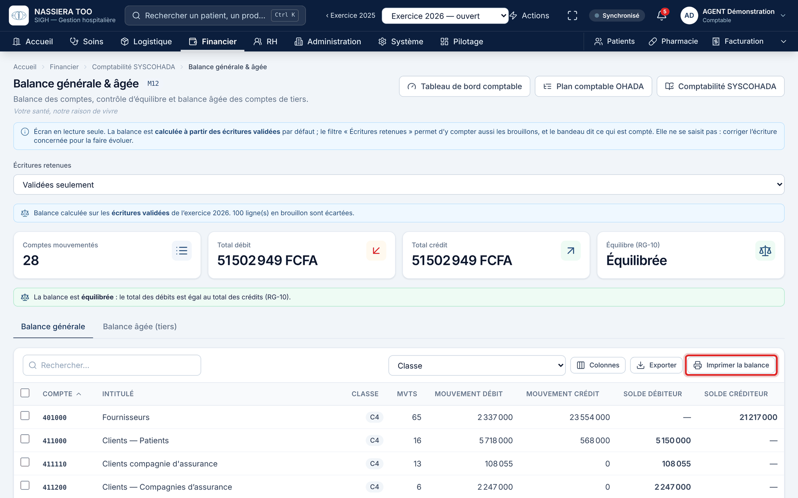
La balance générale.
Les autres états : Grand livre, Compte de résultat, Tableau des flux de trésorerie, États financiers, Seuil de rentabilité, Comptabilité analytique, Budgets, Immobilisations & amortissements, Banques & rapprochements, Échéances fiscales & paiements, Calendrier fiscal mensuel.
ℹ️ Information
Le sélecteur d’exercice de la barre supérieure n’apparaît que sur les écrans qui suivent une année (comptabilité). Choisissez l’exercice avant de lire un état.
16.4 Clôturer un exercice
L’écran Exercices & clôtures conduit la clôture annuelle. Ses onglets : Exercices, Périodes de l’exercice, Lettrage des tiers, Comptes de résultat, Circuit de clôture.
Vérifiez dans Circuit de clôture qui démarre, qui passe l’inventaire, qui clôture et qui peut rouvrir.
Lancez la Pré-clôture et traitez les avertissements.
Faites clôturer par la personne désignée.
Ouvrez l’exercice suivant dans Bilan d’ouverture & à-nouveaux.
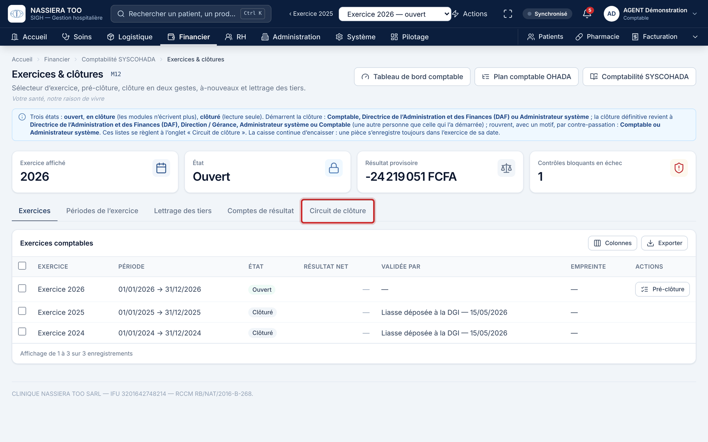
Exercices & clôtures : l’onglet Circuit de clôture.
🛑 Alerte
Un exercice clos n’accepte plus aucune pièce : même une pièce saisie sur un autre poste et datée de cet exercice est refusée à la synchronisation. Avant de clôturer, assurez-vous que tous les postes sont synchronisés (pastille « Synchronisé »).
ℹ️ Information
Les soldes d’ouverture inconnus sont affichés « inconnus », jamais zéro. Le circuit de clôture est un réglage daté, réservé au geste « Régler le circuit de la clôture annuelle ».
Chapitre 17Ressources humaines et paie
Planning et gardes, congés, badges, paie et primes.
Choisissez la semaine et le service ; le tableau montre chaque agent et ses vacations (Garde 24h, Repos 24h, Repos 48h, Garde soins, Garde hospitalisation, Perm., Soirée…).
Posez ou changez une vacation dans la case de l’agent et du jour.
Pour une exception, utilisez Déroger pour un agent ; pour un nouveau cycle, Nouveau régime.
Imprimez avec Imprimer le planning.
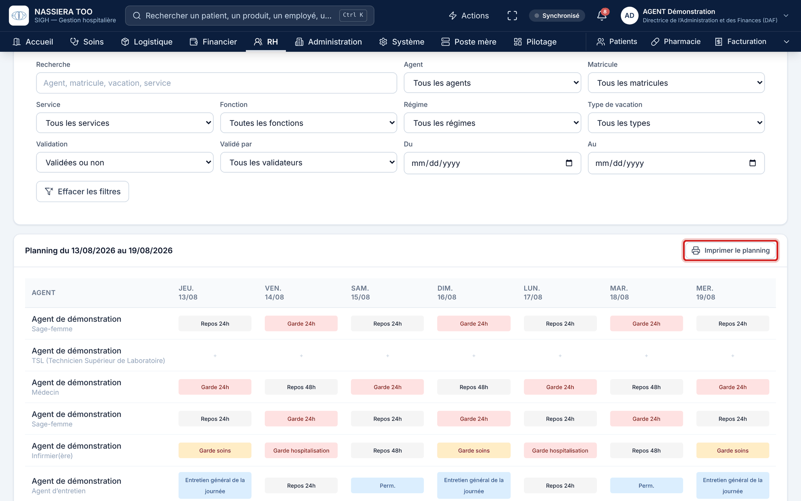
Le planning des gardes (noms du personnel masqués).
ℹ️ Information
Les primes de garde et de permanence sont calculées depuis le planning validé et la grille en vigueur (RG-11). Un planning non validé ne produit pas de prime.
Qui voit quoi : « Planning & gardes » (droits d’origine de la clinique)
Peut agir (créer, modifier)
Administrateur système, Directrice de l’Administration et des Finances (DAF), Surveillant
Consulte seulement
Direction / Gérance
Ne voit pas l’écran
tous les autres rôles
17.2 Enregistrer un congé
Ouvrez RH ➔ Ressources humaines ➔ Congés.
Cliquez sur Nouveau.
Renseignez Agent, Nature du congé, Date de début, Date de fin, Remplaçant désigné et Motif.
Cliquez sur Créer. La décision s’inscrit dans la colonne Décision.
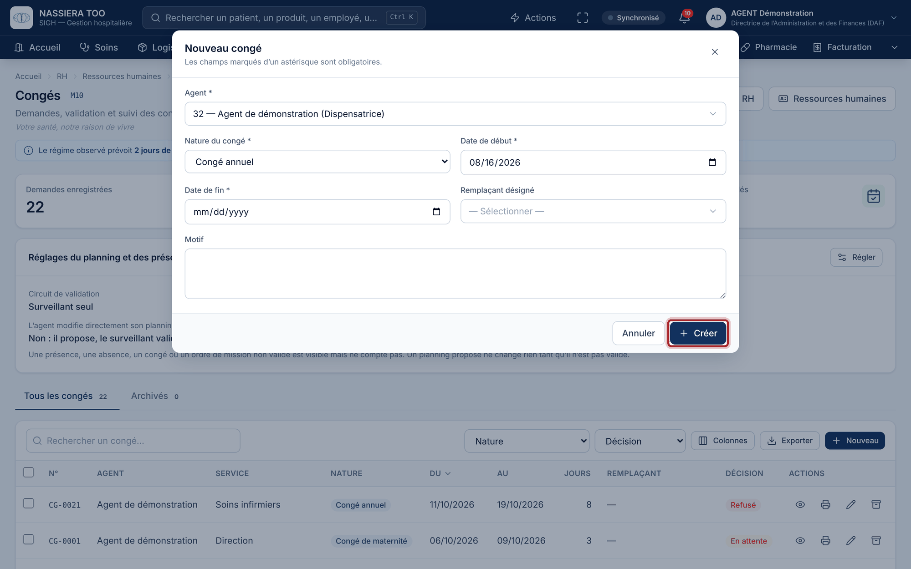
La fenêtre Nouveau congé.
17.3 Émettre un badge
L’écran Badges du personnel a les onglets Badges en cours, Retirés, Agents sans badge et À décider par la Direction. Le bouton Émettre un badge crée le badge, imprimé au format carte CR80 (sans IFU ni RCCM). L’écran Vérifier un badge contrôle un badge présenté.
17.4 Calculer la paie
Ouvrez RH ➔ Paie & Primes ➔ Calcul de la paie.
Cliquez sur Lancer le calcul. Le tableau montre, par agent, la base, les primes, le brut, les retenues (CNSS, ITS, avances) et le Net à payer.
Contrôlez, puis cliquez sur Générer les bulletins.
Faites valider par la Direction (Validation Direction) et imprimez Éditer le journal de paie.
Le calcul de la paie : 1 Lancer le calcul, 2 Générer les bulletins.
ℹ️ Information
Les cotisations sociales sont calculées automatiquement : part patronale 16,4 %, part ouvrière 3,6 %.
⚠️ Attention
Les écrans RH et paie sont réservés aux profils RH et comptables (RG-13). Le rôle « Responsable RH » est archivé dans la configuration actuelle : ces écrans sont tenus par la DAF, la Direction et l’administrateur.
Chapitre 18Administration, documents et états
Courrier, réunions, validations en attente, enquêtes, gestion documentaire et bibliothèque des états.
Renseignez le sens (départ ou arrivée), la date, le correspondant, l’objet, la nature et la personne à qui il est affecté.
Enregistrez ; joignez le scan du courrier.
Le registre des courriers.
Qui voit quoi : « Courriers (départ / arrivée) » (droits d’origine de la clinique)
Peut agir (créer, modifier)
Administrateur système, Direction / Gérance, Directrice de l’Administration et des Finances (DAF), Réception / Accueil, Agent Administratif, Assistant de Direction
Consulte seulement
aucun rôle
Ne voit pas l’écran
tous les autres rôles
18.2 Traiter les validations en attente
L’écran Validations en attente réunit tout ce qui attend une décision : changements de prix, bons de besoins, référentiels. Chaque carte porte un bouton Ouvrir ou Y aller vers l’écran où se prend la décision.
Le centre des validations en attente, vu par la DAF.
ℹ️ Information
Une décision peut se prendre sur n’importe quel poste. Prise sur un poste autre que la mère, elle est signée, déposée, puis appliquée par la mère : une pastille « N décisions en attente de la mère » le rappelle. Ce n’est jamais un blocage.
18.3 Éditer un état
Ouvrez Administration ➔ Rapports & Impression ➔ Bibliothèque des états, ou Actions ➔ Éditer un état.
Choisissez l’état et cliquez sur Éditer.
Réglez la période et les filtres, puis imprimez ou exportez.
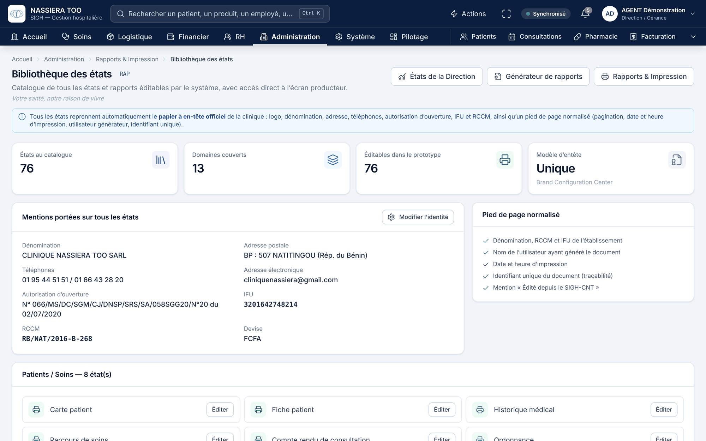
La bibliothèque des états, vue par la Direction.
Les autres écrans : Réunions, Notes de service, Plan annuel de travail, Interventions ambulance, Répertoire des ambulances, Parc technique & maintenance, Enquêtes & questionnaires, Satisfaction des patients, Bibliothèque documentaire, Workflow de validation, Archivage & conservation, Générateur de rapports, Historique des éditions.
Chapitre 19Système et pilotage
Ce que les utilisateurs voient du domaine Système, et les tableaux de bord du Pilotage.
19.1 Le domaine Système
Le domaine Système (utilisateurs, rôles, sauvegardes, configuration de la clinique, poste mère) est réservé à l’Administrateur système et à la DAF. Il est décrit dans le Manuel administrateur.
Les autres rôles n’y voient que la rangée Importation de données, limitée aux jeux sur lesquels ils ont un droit (chapitre « Les gestes communs »).
ℹ️ Information
Chaque agent peut demander à l’administrateur la réinitialisation de son mot de passe (lien Mot de passe oublié ?). Pour changer de rôle, de secteur ou obtenir un droit, adressez-vous à l’administrateur : un agent ne modifie jamais ses propres droits.
19.2 Les tableaux de bord du pilotage
Le domaine Pilotage réunit les tableaux de bord de la Direction (Direction, Statistiques de la Direction, Tableau de bord dynamique croisé, Tableau de bord décisionnel), les statistiques par activité et les tableaux de bord de chaque poste.
Le tableau de bord de la Direction.
ℹ️ Information
Chaque indicateur est calculé à partir des données saisies. Un indicateur qui ne peut pas être calculé (donnée manquante) est affiché « non calculable », jamais zéro.
Qui voit quoi : « Direction », « Statistiques de la Direction », « Tableau de bord dynamique croisé » (droits d’origine de la clinique)
Peut agir (créer, modifier)
Administrateur système, Direction / Gérance, Directeur Médical, Directrice de l’Administration et des Finances (DAF), Comptable
Consulte seulement
aucun rôle
Ne voit pas l’écran
tous les autres rôles
Chapitre 20L’application mobile
Le téléphone du soignant en tournée, du médecin et de la sage-femme à domicile, et la réception de secours.
20.1 Les profils du téléphone
Le téléphone est attribué à un agent. Son accueil dépend de son profil, et chaque profil ne voit que ses écrans :
Profil
Accueil
Ce qu’il fait
Soignant (infirmier)
Ma tournée
Agenda du jour, dossiers du lot, constantes, notes de soins.
Médecin
Mes visites
Consultation à domicile, Prescription, Demande d’analyses.
Ouvrir un dossier, Orienter un patient, quand le poste de l’accueil est indisponible.
⚠️ Attention
Les captures de ce chapitre viennent du simulateur mobile de la maquette. L’application Flutter (dossier apps/mobile) reprend ces écrans ; son accueil soignant s’intitule Ma tournée avec les onglets Agenda du jour et Dossiers du lot, et la réception s’intitule Réception de secours. Elle n’a pas été éprouvée sur un téléphone réel.
ℹ️ Information
Le téléphone ne parle jamais directement au poste mère : il passe par le relais web, et tout ce qu’il envoie est chiffré. Il ne travaille que sur le lot de tournée que la mère lui a préparé.
20.2 Appairer le téléphone
L’appairage relie le téléphone à la clinique. Il se fait une seule fois, avec l’administrateur.
Ouvrez l’application. L’écran Appairer ce téléphone s’affiche.
Saisissez le Code d’appairage remis par l’administrateur (il le crée sur le poste mère, écran Appareils et appairage).
Touchez Scanner le QR et visez la Clé de clinique affichée sur le poste mère.
Vérifiez le Profil de ce téléphone (Soignant, Médecin, Sage-femme ou Réception) et, dans l’application de production, le Nom de l’agent.
Touchez Appairer.
Choisissez votre Code PIN : il protège l’application à chaque ouverture.
L’écran Appairage.
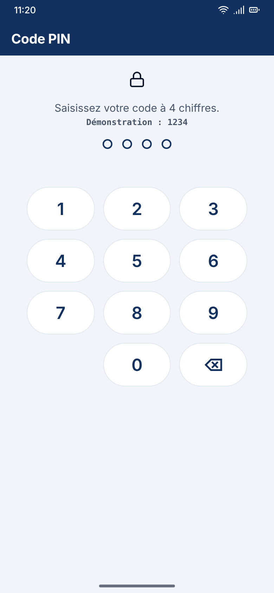
Le code PIN protège l’application.
🛑 Alerte
Un téléphone perdu doit être signalé tout de suite à l’administrateur : il le suspend depuis le poste mère. Le bandeau du téléphone affiche alors « Téléphone suspendu, contactez la clinique ».
20.3 Le bandeau d’état
En haut de chaque écran, un bandeau dit toujours l’état du téléphone : Connecté ou Hors ligne, suivi s’il y a lieu de « N en attente d’envoi », « N à traiter » ou « lot de tournée expiré ». Touchez le bandeau quand il annonce des refus : l’écran À traiter s’ouvre.
20.4 Faire sa tournée (soignant)
Ouvrez l’accueil Ma tournée. L’agenda du jour s’affiche en premier.
Touchez un patient pour ouvrir son Dossier du patient.
Touchez Saisir les constantes et renseignez les mesures, puis Enregistrer.
Les saisies partent à la prochaine connexion ; le bandeau compte celles « en attente d’envoi ».
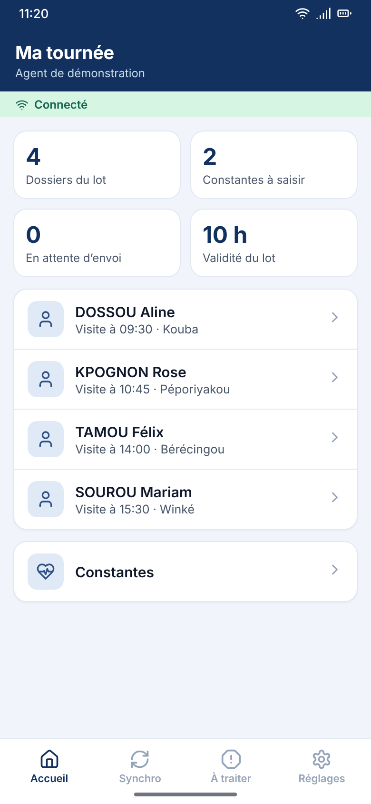
L’accueil Ma tournée.
Le dossier du patient.
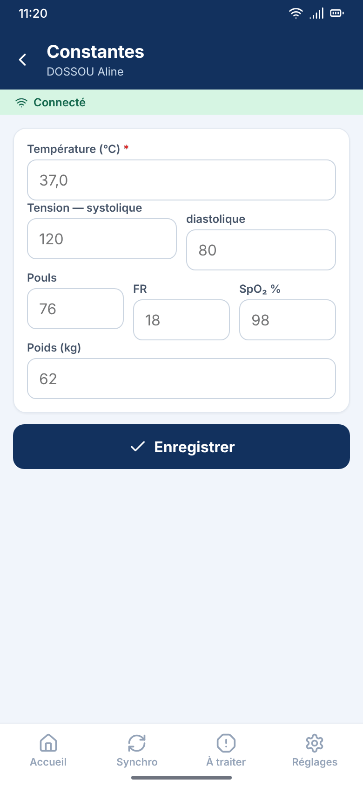
La saisie des constantes sur le téléphone.
20.5 Visites du médecin et suivis de la sage-femme
Le médecin ouvre Mes visites, choisit le patient, puis Consultation à domicile.
Pour prescrire, il ouvre Prescription, choisit le Médicament du catalogue ou les Examens demandés, coche Urgence si besoin et enregistre.
La sage-femme ouvre Mes suivis et choisit la visite (CPN, CPoN, surveillance mère-bébé).
L’accueil Mes visites (médecin).
La prescription depuis le téléphone.
20.6 Réception de secours
Quand le poste de l’accueil est indisponible, la réception de secours ouvre les dossiers sur le téléphone.
Ouvrez Accueil de secours. L’écran montre les Numéros réservés restants et le Numéro suivant.
Touchez Nouveau dossier et renseignez Nom, Prénom, Âge déclaré, Téléphone, Quartier.
Touchez Ouvrir le dossier. Le dossier rejoint le répertoire de la clinique par le relais.
Retrouvez vos dossiers dans Dossiers ouverts ; si besoin, touchez Orienter un patient.
ℹ️ Information
Le téléphone de secours numérote dans une plage de numéros réservée à l’avance. Si la plage est épuisée, le dossier reçoit un code provisoire (badge « PROV »). Un dossier qui ressemble à un dossier existant est marqué « Doublon ? » et attend l’arbitrage de la clinique : il n’est jamais fusionné en silence. La caisse et le dossier médical complet ne sont pas couverts par ce profil.
L’accueil de secours.
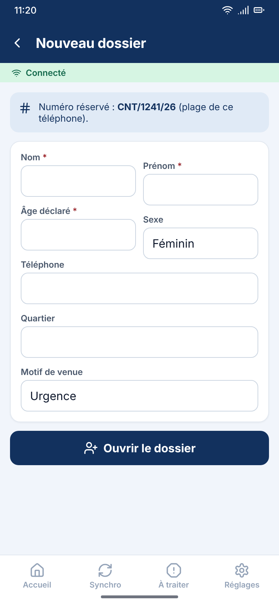
L’ouverture d’un dossier.
ℹ️ Information
La réception de secours ne voit pas le lot de tournée ni les écrans de soins : ce que son profil ne couvre pas n’est pas proposé, et le serveur le refuserait de toute façon.
20.7 Synchronisation, refus et réglages
Synchronisation : ce qui est parti, ce qui attend, et le bouton Synchroniser maintenant.
À traiter : les refus de la clinique, chacun avec « À faire : » et le geste qui corrige.
Lot de tournée : les dossiers confiés à ce téléphone et leur date d’expiration (bouton Rafraîchir).
Réglages : l’agent, le profil, le code PIN et Réinitialiser l’appairage (à ne faire qu’avec l’administrateur).
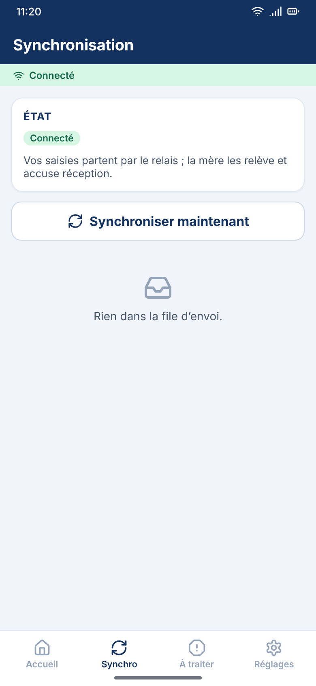
L’écran Synchronisation.
L’écran À traiter.
Le lot de tournée.
Les réglages du téléphone.
Chapitre 21Le relais web
Ce que l’agent voit, et ne voit pas, du relais en ligne de la clinique.
21.1 À quoi sert le relais
Le relais web est un service hébergé en ligne (adresse de la clinique : sighcnt.nassieratoo.com). Il transporte des paquets chiffrés entre le poste mère, les postes de la clinique et les téléphones. Il ne sait pas les lire : la clé reste à la clinique.
Vous ne vous connectez jamais au relais pour travailler : le travail se fait sur le poste ou sur le téléphone.
Vous voyez le relais seulement à travers la pastille de synchronisation du poste et le bandeau du téléphone.
Les SMS de la clinique (rappels de rendez-vous, si le patient l’a accepté) partent par le relais.
Un lien de partage d’une enquête de satisfaction peut être remis à un patient ; il ouvre un questionnaire sans aucun accès au dossier.
ℹ️ Information
Le panneau du relais (adresse /panneau) est réservé au superadministrateur. Un agent n’y a pas de compte. Il est décrit dans le Manuel administrateur.
⚠️ Attention
Le relais réel sur l’hébergement de la clinique n’a pas été éprouvé en conditions de production au moment de cette édition. Aucune donnée de santé ne transite en clair : si le relais est indisponible, les postes continuent de travailler entre eux et les téléphones gardent leurs saisies jusqu’au retour du service.
Annexe ALimites connues et points non vérifiés
Cette annexe récapitule ce que le manuel ne garantit pas encore, au 16 novembre 2026.
Captures : toutes prises sur la maquette de référence, pas sur le poste de bureau compilé. Le poste Windows n’a pas été compilé ni photographié pour cette édition.
Application mobile : captures du simulateur de la maquette ; l’application Flutter n’a pas été éprouvée sur un téléphone réel.
Relais web : non éprouvé sur l’hébergement réel de la clinique.
MECeF : le boîtier physique n’est pas encore piloté ; la certification réelle reste à vérifier sur site avec le fournisseur.
Chiffrement de la base locale (SQLCipher) : non branché à la date de cette édition.
Seuils du laboratoire : la validation d’un seuil de variation et son délai entre deux mesures existent sur la maquette ; le poste de bureau ne les porte pas encore.
Libellés : extraits de la maquette ; quelques titres de fenêtre gardent une tournure brute (« Nouveau admission », « Tous les consultations ») qui sera corrigée à l’écran.
Droits : les tableaux « Qui voit quoi » montrent les droits d’origine ; votre clinique a pu les ajuster.
Non couverts en détail : chaque écran de la maternité, des statistiques, de la gestion documentaire et des registres annexes (seuls leurs écrans principaux sont décrits).
Annexe BGlossaire
Terme
Définition
Archiver
Retirer une fiche de la liste courante sans la détruire (RG-14). L’archivage s’annule.
Avoir
Facture qui corrige ou annule une facture émise, qui elle ne se modifie jamais.